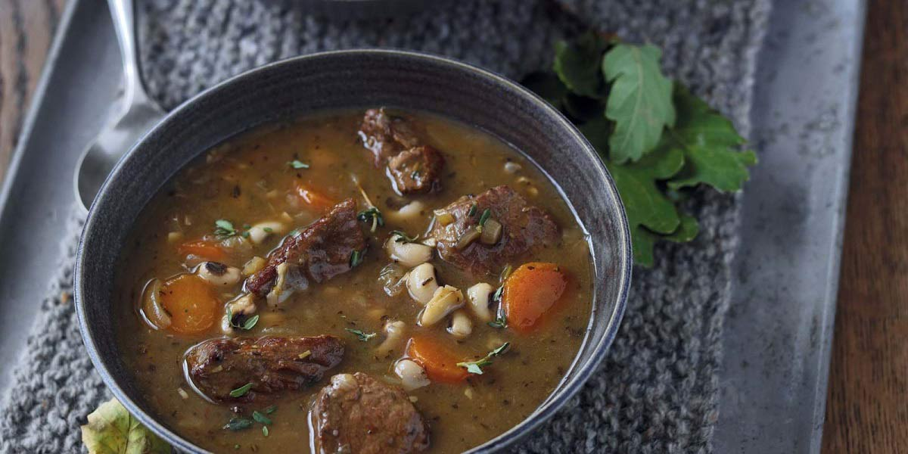

Oxtail Soup
Recipe Specification
Ingredients List
| Ingredients | Quantity |
|---|---|
| Oxtail | 1.3kg |
| Vegetable Oil | 50ml |
| Plain Flour | 15g |
| Salt | 1 tsp |
| Black Peppercorns | 12x1 |
| Thyme | 3 sprigs |
| White Onion | 1x1 |
| Celery | 1 stalk |
| Carrot | 1x1 |
| Beef Stock | 1.5Litres |
| Bay Leaf | 20ml |
| Tomato Puree | 30g |
| Red Wine | 300ml |
Yield: 6-8 portions
Preparation
- Cut oxtail into 1 inch cubes.
- Peel and slice white onion.
- Peel and dice carrots.
- Wash and dice celery.
Cooking Instructions
- Put a medium sized cast iron pot on a medium/high heat and add 30ml of vegetable oil.
- Brown oxtail pieces in batches before removing from pot and setting aside.
- Add diced onion, carrots and celery to pot before sautéing for 2-3 minutes.
- Add thyme, bay leaf, peppercorns and tomato puree before cooking for 3-4 minutes.
- Add oxtail, wine and stock to the pan before bringing to the boil and reducing to the simmer. Cover pan with lid and cook for 2½-3 hours .
- Once meat is falling off the bone, strain mixture and keep liquor.
- Pic meat off oxtail, place in a container and put in the fridge.
- Place liquor in the fridge for 24 hours
- After 24 hours, remove layer of fat from liquor and return liquor to a sauce pan. Place saucepan over gentle heat and warm liquor through.
- Mix flour with 50ml of cold water to make paste before whisking paste into oxtail liquor.
- Once oxtail liquor has thickened, add oxtail meat and season to taste.

Serving Suggestions
Serve oxtail soup with crusty bread and plenty of butter.
Storing instructions
Consume on the day.